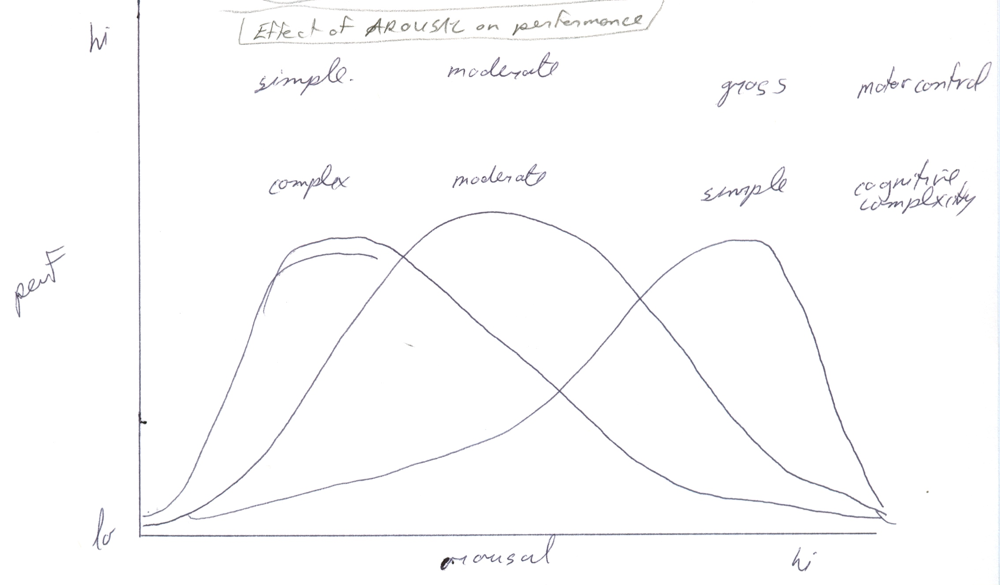
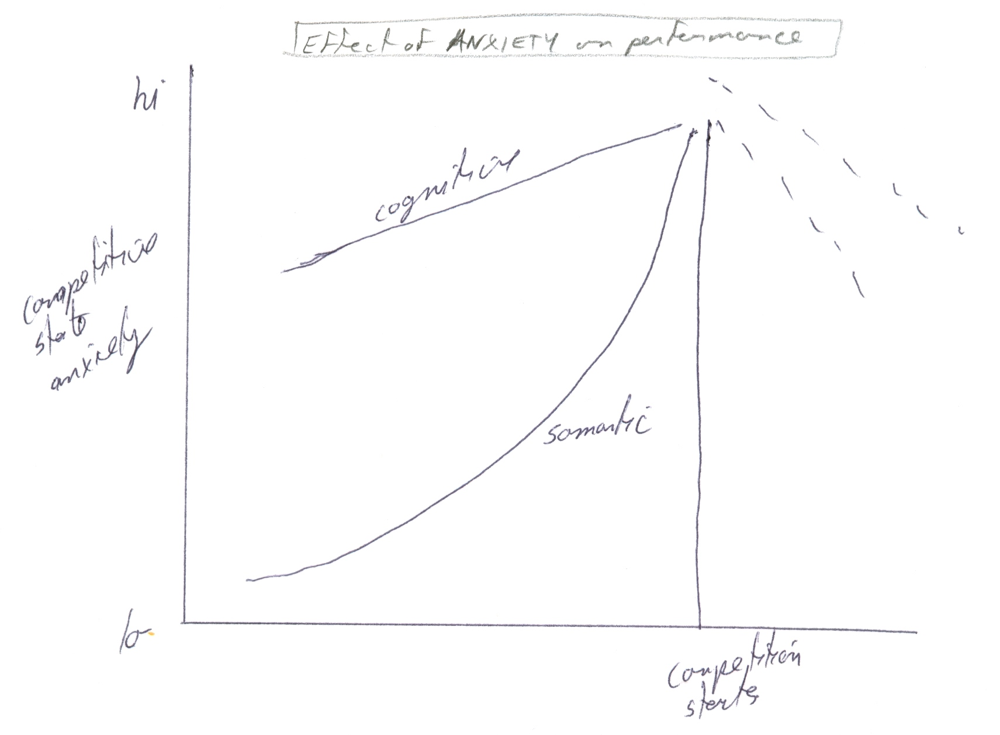

|
ch10 Self-Directed Coaching Manual
ch 10) CATEGORIZING EMOTIONS
INTRODUCTION The chapters in the last section introduced us to very specific ways to control our physical behavior in sport. In this section, “Control of Emotions and Environment”, the discussion is much more general. By definition, emotions and environment are complex and multifaceted, so learning how they work, helps us flow with them. We search for healthy environments, and attempt to become a part of it. Emotions have a huge impact on sports performance, so understanding how they work in general is important. The working definitions of arousal, stress, and emotions have fuzzy boundaries. Admittedly, this causes a lot of confusion, not only amongst athletes, but the scientific community as well. This part of the manual is a general overview of this area in sport psychology. It does not get into the micro-managing detail of the learning and performing chapters. Athletes can use as a general guide from which to study their situation to create a more precise program for themselves. Emotions and arousal are concentrated in the brain stem, so they can influence all information sent and received from the spinal cord. This is a primitive survival function; however, the overuse or under-use of these cortical areas can cause problems. Perception of pain both physically and emotionally motivates us to get rid of pain. Perceiving something that “feels good” motivates us to experience it again. Our emotions constantly oscillate up and down around an equilibrium point. This is how all biological functions occur as well, so a gentle natural oscillating pattern is normal and healthy. Being content is the most stable emotional experience, with very little variance. This is not only a comfortable state to be in, but also the safest. Being content is the opposite of being manic-depressive. If the state of content is familiar, we can purposely set an extreme oscillation in arousal and emotion, knowing that our natural set point, or state of mind, is to be content, which for us is stable and achievable very quickly. This emotional “up” brings power and determination to our performance. As athletes, we can use arousal and emotions as measuring sticks of how we feel. If we like what we feel, then we can figure out what to do to ensure we get that feeling again. What we think, influences how we feel, which in turn can influence our body’s health and power. Consequently, positive affirmations, which means just thinking in positive constructive terms, has benefit in sport performance, and our ability to deal with life in general. Making Personal Adjustment to Create Harmony As high end athletes, we tend to question our abilities and even ourselves quite often. So what is normal behaviour? What is abnormal behaviour? Using the philosophical principles of psychology, normal and abnormal behaviour is explained in the following way. When we change things in our life, we are adjusting with a goal of creating harmony. Specifically, adjustment means to arrange, harmonize and come to terms. We arrange parts among ourselves, and in relation to something else. We make adjustments amongst parts of ourselves. Our goal is to have harmony of our thoughts, actions and feelings. For example, a person torn by internal contradictions may want to be loved, but hates people. If a person has no inner harmony, then we say the person is “badly adjusted” or “disturbed”. If the person is mentally ill, then we say the person is “unbalanced”. If a person does not fit into a situation or is out of phase with the world around them, then we say that this person is “out of touch”, “gone”, “way out”. Saying someone is “badly adjusted” is a value judgement. Making self-changes sometimes comes easy “just like that”, while at times it requires some skill.
EMOTIONS Now lets look at what emotions are commonly experienced by athletes. First of all, let’s understand that emotions are powerful, but not all bad. Positive emotions are just as powerful as negative emotions. As mentioned earlier, overall positive mood is good because it increases the overall efficiency of the nervous system; however, specific moods and emotions are not usually used by international level athletes because they are hard to replicate and they can distract from flow. Note that we should not confuse the tensing up of the body in a stressful situation with emotion. It is quite natural for the face to show strain when the body is in strain. Easterners call this the natural flow of energy. Many of their martial arts include making attack noises and faces in their movements, all without emotion. Emotions are symptoms, not causes; so there are no good or bad emotions. If we do not like what we feel, we can see if there is anything that you can do to change things for the better. If we do like what we are feeling, we could see if we can figure out how we can make that continue. Therefore it is important to listen to our emotions. They are our measuring sticks, telling us if what we are doing is on right track, or not. Emotions are our first clue towards answers. Emotions tend to follow patterns. A common pattern in sport is the reaction after we have tried something our hardest. It follows the sequence ANGER -> DEPRESSION -> ACCEPTANCE and can last from a few seconds to forever, but is usually around an hour. This sequence happens regardless of success or not, but is most intense after a failure. It is best to let the cycle take its natural course and not interfere. The intensity of this cycle is the same for males and females, however, social learning defines how long we are in each stage.
AROUSAL Another key factor to successful performance is appropriate arousal. Arousal is defined in 2 ways. First, it means to awake from sleep resulting in being fully conscious, alert and aware. Second, it means to stimulate to action, creating a physiological readiness for activity. Activation refers to the energy mobilization required for an organism to pursue its goals and meet its needs. The characteristics of physical arousal and activation are as follows. Physical arousal or activation, means the overall extent that the organism is aroused or activated. It is the activity of processes that provide energy for overt behaviour. It is not the actual overt behaviour. Physiologically, it is located in the thalamus, hypothalamus, limbic system and reticular activating system (RAT). It can be physically measured by observing muscle tension (eletromyogram), skin conductance, brain activity (EEG), blood pressure (BP), pulse, body temperature, blood volume in body parts. Arousal requires the body to metabolize which is the process by which material is assimilated. Technically, metabolism means the changes in living cells by which energy is provided for vital processes and activities. Now let’s compare physical arousal and mental awakeness and alertness. We can be very awake and physically quiet, like when we are sitting and studying for a long time. In contrast, we can be very unalert and physically aroused. This can happen when high on a drug like cocaine, or when in a trance state like in distance running. The goal of the athlete is to decide on appropriate arousal and activation. Where is it occurring during my sports activity? How is it occurring during my sports activity? Physical activation and mental activation, and they are mutually exclusive. Physical activation is appropriate if want to increase gross and aggressive movements, while decrease fine movements. Mental activation of high concentration events requires decreasing metabolism in emotional areas, such as limbic and amygdale areas, and increasing metabolism in thinking areas, which are in the frontal cortex. Mental activation of low concentration events requires decreasing attention abilities, so that are in a trance like state. In the diagram “Effects of Arousal on Performance”, figure 10-1, note that high arousal is best for gross motor control, while low arousal is best for complex cognitive events. Figure 10-1: Effects of Arousal on Performance 
STRESS Just like emotions in general, stress can be good or bad. Let’s move onto a discussion of stress, starting with some operational definitions. Our goal is to understand stress, and to influence or control it. Stressors are adjustment demands. Stress refers to the effects that stressors have on an organism. Eustress is a positive stress, while distress is a negative stress. Both eustress and distress tax resources and coping skills. Coping strategies are methods in dealing with stress. Stress and coping strategies are integrated and dependent on each other. In general, there is a positive response and negative response to stress. A positive stress response encourages us to MOVE. It increases the activity of all body functions. However, if metabolism is too high, we get “butterflies”. A negative stress response creates ANXIETY. The cause can be frustration, anger, worry, fear. A type A personality is prone to anxiety. The symptoms of an anxious state are numbness, lack of control, decreased attention span, and decreased organizational abilities. If anxiety is chronic, one develops constipation, coronary problems, ulcers, and hives. This is from PNS overcompensation. More specifically, scientists study stress by creating “models of stress”. Then each component and link is checked scientifically. The foundational principles of all models are as follows. Sources of stressors are frustrations, pressures and conflicts. Vulnerability to these stressors is influenced by the following characteristics. The nature of the stressor, influences the impact of stress. Stress is increased when stressors are cumulative, long in time, of good quality, and amount of time given to deal with it. The perception of threat by the stressor increases its influence. We can decrease this perceived threat by developing control of the situation, or developing a tolerance to the situation. Increasing external resources and social support, decreases the vulnerability of stressors. Specifically, the diathesis-stress model can be used to show one’s vulnerability to stress. Diathesis refers to ones predisposition to abnormal behaviour. Stress refers to causal factors that precipitate behaviour.
ANXIETY, FEAR Anxiety and fear are very similar emotions, but understanding their differences is important for athletes, so we can control these emotions to our benefit. Anxiety is the subjective feeling of apprehensiveness and heightened physiological arousal. There are 2 types of anxiety, trait anxiety and state anxiety. Trait anxiety is the inherent personal characteristic to be anxious. State anxiety is a reactive response to a situation. There are 2 types of state anxieties. Cognitive state anxiety refers to the mental component of state anxiety caused by fear of negative self-evaluation and a threat to self-esteem. Somatic state anxiety refers to the physiological affective aspects of anxiety. It is directly related to arousal. The graph diagram “Effect of Anxiety on performance”, figure 10-2, shows an increase in all anxieties leading up to a sporting event, followed by a sudden drop in anxieties once the competition has started. Figure 10-2: Effect of Anxiety on Performance 
So how does anxiety compare to fear? There are biological and cognitive explanations of fear. Biological explanation of fear occurs in the brain. When there is fear, the amygdale is activated. Narrow responses for fight and flight are wired into the amygdala, so the starter motor for all body movements are straight from the amygdala, ignoring all higher-order movements in the frontal cortex. For example, someone with Parkinson’s disease has a cortical starter motor that is not working, so they have difficulty moving. However, if a Parkinson’s patient has to avoid danger, they can, because they are using a different starter motor. The implication for sport, is to avoid innate fear if the athletic movements are complicated and integrated. Rehearse in advance specific responses to difficult situations. Cognitive explanation of fear is more complicated, but we also have the opportunity to develop much control over our fear reactions using cognitive methods. When experiencing fear, the following cognitive events happen. An anxiety response to fear sets up blocks in unpredictable places in the cortex. As a result, we do not have full use of all our capabilities, including self-actualization. As well, we do not perceive reality properly. We may not see real dangers, and our judgement is skewed. Examples of cognitive problems that can result from fears include desensitization, defensiveness, compulsiveness, and obsessiveness.
ANGER, AGGRESSION Aggression can be categorized as controlled aggression, hostile aggression and crazy aggression. This manual focuses on creating controlled aggression. Controlled aggression refers to being aggressive in a controlled and non-emotional way. Refer to “focus and flow” in this manual. Hostile aggression refers to being angry or mad. If the athlete is mad, response sets become very narrow and unpredictable, often ignoring the primed premotor cortical areas. If the athlete achieves good performance while mad, then they can only achieve the same performance with the exact same emotions. This is state appropriate transfer (SAT) explained earlier. Crazy aggression refers to the state of being desensitized. For example, an athlete may coach themselves, “do or die”. The athlete can easily make mistakes in this state, because they are being impulsive. Athletes who are naturally talented, may only need to be angry to be able to perform well. This works up to a point, because everyone eventually hits a down cycle. Anger at this point only makes the situation worse. There are no short cuts to long-term excellence. For consistent performances, analysis of why the performance went well and creating attention triggers for these correct timings are needed. Overall, it is possible to use anger in a controlled way, but this is much harder to do than using task-orientated methods. [end of chapter 10] SDCM home |